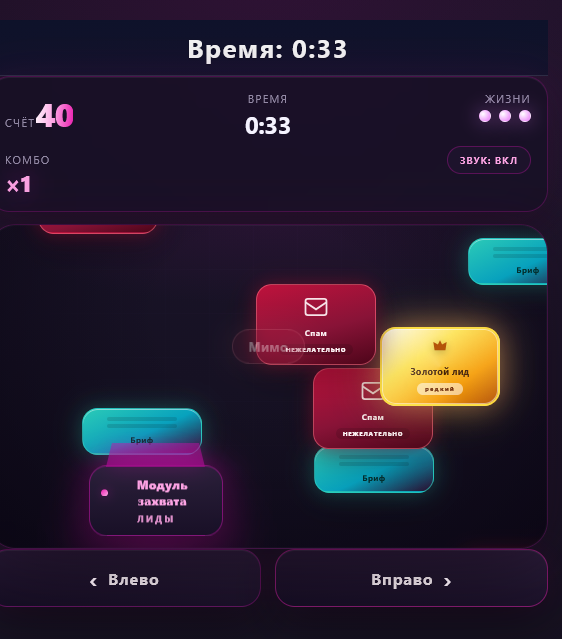
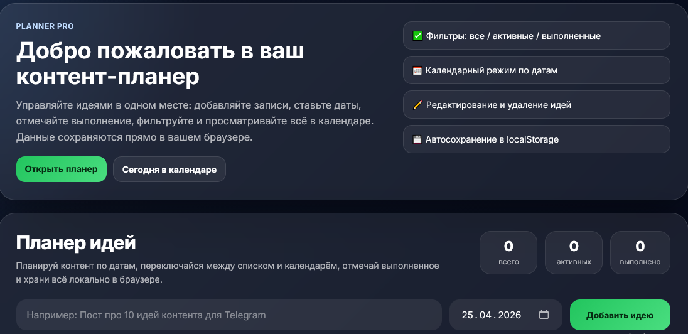
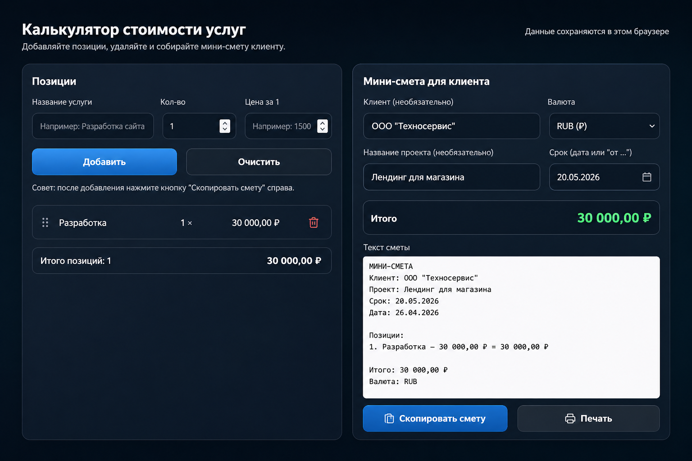

Сайты и лендинги
Собираю структуру, тексты и интерфейс так, чтобы страницу было легко читать и удобно использовать.
Веб / Боты / Digital / AI
Выпускница школы Нейросетей и СММ Ксении Барановой. Помогаю бизнесу и экспертам запускать современные сайты, ботов и digital-решения с понятной структурой, аккуратным интерфейсом и рабочей логикой.
Я Халилова Наталья, выпускница школы Нейросетей и СММ Ксении Барановой. Создаю сайты, ботов и digital-проекты с помощью ИИ. Помогаю бизнесу и экспертам запускать понятные цифровые решения: сайты, интерфейсы, ботов и автоматизации.
Что я делаю:
Делаю аккуратный интерфейс, понятную структуру и рабочую логику — чтобы проект выглядел современно и был удобным для пользователя.
Собираю структуру, тексты и интерфейс так, чтобы страницу было легко читать и удобно использовать.
Проектирую сценарии, команды и логику — чтобы бот решал задачу пользователя и бизнеса.
Встраиваю ИИ в digital-проекты: от идей и контента до улучшения логики и пользовательского опыта.
Продумываю путь пользователя, состояния, сценарии и детали — чтобы всё работало предсказуемо и понятно.
Собираю структуру экранов, связки и действия так, чтобы продукт был цельным и удобным.
Помогаю превратить идею в понятный продукт: позиционирование, структура, подача и аккуратный интерфейс.
Я смотрю не только на задачу, но и на ощущение, которое должен передавать проект.
Красивый сайт без логики — это просто красивая обёртка. Поэтому я собираю смысл, сценарий и путь пользователя.
Когда есть стиль и логика, проект собирается быстрее, точнее и выглядит сильно.
Эстетичный сайт с каталогом букетов, понятной навигацией и аккуратной визуальной подачей.

Мини-игра про лидогенерацию и качество заявок с геймификацией и цельным пользовательским сценарием.

Инструмент для планирования идей и публикаций с фильтрами, календарным режимом и автосохранением данных.

Помогает быстро собрать смету для клиента: добавить позиции, посчитать итог, выбрать валюту, скопировать готовую смету и отправить её на печать.
Потому что я умею видеть проект целиком.
Не только:
но и:
Подбираю инструменты под задачу и собираю решение так, чтобы оно было понятным, аккуратным и удобным для пользователя.
Хороший сайт — это не когда «нормально сверстано».
Это когда у проекта появляется энергия, форма и ощущение, что он живой.
Открыта к новым проектам и сотрудничеству. Если вам нужен аккуратный сайт, интерфейс, бот или digital-решение с понятной структурой и современным видом — буду рада обсудить задачу.